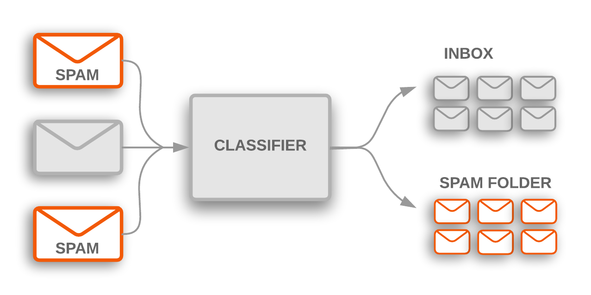

class: center, middle # IEMS 5780<br/>Building and Deploying Scalable<br/>Machine Learning Services ### Lecture 3 - Text Classification (1) #### Albert Au Yeung<br/>20th September, 2019 --- class: center, middle # Text Classification --- # What is Text Classification? * Putting a piece of **text** into a suitable **category** * Categories / classes are **pre-defined** * An example of **supervised learning** * **Inputs** - text (e.g. news article, user reviews, email content) * **Output** - topics / categories (e.g. sports / financial / technology news. or spam / non-spam emails) - polarity of opinions (e.g. positive, neutral, negative) - relevancy - tags (multi-label classification task, e.g. [predicting tags for stackoverflow questions](https://archive.org/details/stackexchange) --- # Spam Email Detection * [https://developers.google.com/machine-learning/guides/text-classification/]([https://developers.google.com/machine-learning/guides/text-classification/]) <center>  </center> --- # Characteristics of Text Classification - Highly **unstructured** (not in tabular format) - Data can be very **noisy** - Unput can be very short (e.g. "Nice restaurant!"), and can also be very long (e.g. a detailed report of an event on a newspaper) - unseen data very likely to contain **unseen features** (new words, phrases, symbols or codes) - Many new features might come up over time (e.g. new jargons, new words) - Things can become very different across **different languages** - ... --- # Features & Representation * Since texts are **not structured** input, we need some ways to convert a text into a **vector representation** (feature vectors) * What would be the **features** `\(X\)` of a text document? - Individual **words** / **phrases** / **sentences** - Can also consider: - **Length** of the text - Existence of special **entities** in the text (e.g. person names, organizations, countries, etc.) - Source (e.g. which newspaper it is from) - **Date/time** of creation, publication, modification, etc. - ... --- class: middle, center # Natural Language Processing --- # Natural Language Processing * NLP involves making the computer **understand** natural language input and **generate** natural language output * It is a field that involves computer science, linguistics, artificial intelligence, human-computer interface, etc. <center> </center> --- # Examples: Real-time Speech Translation * [Real-time Skype Translator by Microsoft Research](https://www.youtube.com/watch?v=JrlTzS7Fk6o) * [AI Powered Machine Translation](https://www.youtube.com/watch?v=GYiU3hyMMxs) * [Skype Translator: Speak Chinese like a local](https://www.youtube.com/watch?v=mWTySUGXR2k) --- # How is NLP Done? * Natural languages are usually **unstructured**, in which we find **alphabets**, **symbols**, **numbers and codes**, and even **emojis**. * We need to apply different **pre-processing** algorithms before we can use the data for analysis and machine learning * Common preprocessing tasks: - Tokenization - Stemming - Term Weighting - Parsing - Part-of-Speech (POS) Tagging - Pattern extraction using regular expressions --- # Tokenization * **Token** is a unit in natural language processing * Usually it is a word in English (or other languages using Latin alphabets), separated by space * **Tokenization** = breaking up the raw text into words (or other meaningful units) * Problems: - How do we treat punctuations? - John’s book (John + ‘s + book ?) - Doesn't (does + not, or does + n’t ?) - Hyphenated words: so-called, high-risk, anti-social --- # Chinese (Asian Languages) Segmentation * There is no space between words/phrases in Chinese and other **Asian languages** such as Japanese and Korean ```json 超強颱風「山竹」目前集結太平洋地區，料明日登陸菲律賓，周日再吹襲香港。 美國氣象學家警告，「山竹」威力相等於5級颶風，比吹襲美東颶風「佛羅倫斯」 更強。菲律賓政府嚴陣以待，並已疏散120萬名沿岸居民。 ``` ```json 大阪府北部地震や台風２１号など度重なる災害を受け、京都市は１４日、 各省庁への要望活動を始めた。停電の早期解消に向けた関西電力の指導や、 二条城などの文化財の復旧を支援する制度の拡充を国に求めた。 ``` ```json 스마트폰과 4세대(4G) 롱텀에볼루션(LTE)으로 재편된 휴대전화 시장에 2세대(2G)폰이 2년 만에 나온다. 삼성전자는 이달 중 폴더폰 '와이즈2 2G(모델명 SHC-Z160S)'를 SK텔레콤을 통해 출시한다. 국내 휴대전화 시장에 2G폰이 출시되는 것은 2011년 LG전자 ``` --- # Tokenizing in Python * A commonly used tokenizer in **English** is the one provided by the [Natural Language ToolKit (NLTK)](https://www.nltk.org/) * Example: ```python import nltk sentence = "Antoni Gaudí was a Spanish architect from Catalonia." nltk.word_tokenize(sentence) # ['Antoni', 'Gaudí', 'was', 'a', 'Spanish', 'architect', 'from', 'Catalonia', '.'] sentence = "Every morning I wake up at about seven o'clock." nltk.word_tokenize(sentence) # ['Every', 'morning', 'I', 'wake', 'up', 'at', 'about', 'seven', "o'clock", '.'] ``` --- # Tokenizing in Python * In Chinese, a commonly used open source package is called [jieba](https://github.com/fxsjy/jieba) * Example: ```python import jieba sentence = "超強颱風「山竹」目前集結太平洋地區，料明日登陸菲律賓，周日再吹襲香港。" tokens = list(jieba.cut(s)) # ['超強', '颱', '風', '「', '山竹', '」', '目前', '集結', '太平洋', # '地區', '，', '料', '明日', '登陸菲律賓', '，', '周日', '再吹襲', # '香港', '。'] ``` --- # Normalization * A related issue: words in uppercase or lowercase * E.g. Usually we do not want to treat `house`, `House` and `HOUSE` differently * Normally, we convert all words into lowercases (lowercasing) (*Problem?*) * Truecasing: try to preserve uppercase in entity names, in order to distinguish between something like `Mr. Brown` and `brown colour`. --- # Stemming * A word may appear in different forms, consider: - cat, cats / bus, buses - run, running, runs - fun, funny / beautiful, beautifully * **Stemming** is the action of reducing words to its **stem** or **root** - cat, cats --> cat - run, running, runs --> run * Many different ways to do this: - Lookup table - Rule-based (Suffix stripping) - Stochastic methods (machine learning) --- # Stemming * The widely used stemming method used is the [Porter Stemmer](https://tartarus.org/martin/PorterStemmer/), invented by Martin F. Porter in 1980. * Available in many different programming languages (e.g. C, C++, Python, Java, etc.) * Demo available at: http://qaa.ath.cx/porter_js_demo.html ```python from nltk.stem.porter import PorterStemmer stemmer = PorterStemmer() stemmer.stem("running"), stemmer.stem("run"), stemmer.stem("runs") # All returns 'run' stemmer.stem("beauty"), stemmer.stem("beautiful") # All returns 'beauti' ``` --- # Parts of Speech * Words have different **roles** in a sentence: - **nouns** (e.g. house, car, people) - **verbs** (e.g. run, walk, pay, eat) - **adjectives** (e.g. beautiful, quick) * Roughly, we can divide words into two broad categories: - Content words (e.g. nouns, verbs) - Function words (e.g. prepositions) * **Content words** are also called **open-class** words (not a finite set of words, word can be created or become obsolete) * **Function words** are called **close-class** words, because usually, they do not change over a long period of time. --- class: split # Parts of Speech .column-left[ <center> </center> ] .column-right[ * [https://www.ling.upenn.edu/courses/Fall_2003/ling001/penn_treebank_pos.html](https://www.ling.upenn.edu/courses/Fall_2003/ling001/penn_treebank_pos.html) ] --- # Parts of Speech * **POS tagging** can be treated as a **machine learning** problem * Given a token and its features (e.g. the word itself, previous word, next word, prefix/suffix of the word), predict its POS tag * A **trained model** can be found in NLTK ```python import nltk sentence = "Antoni Gaudí was a Spanish architect from Catalonia." tokens = nltk.word_tokenize(sentence) pos_tagged = nltk.pos_tag(tokens) # [('Antoni', 'NNP'), ('Gaudí', 'NNP'), ('was', 'VBD'), ('a', 'DT'), # ('Spanish', 'JJ'), ('architect', 'NN'), ('from', 'IN'), # ('Catalonia', 'NNP'), ('.', '.')] ``` --- class: middle, center # Document Representation --- # Document Representation * How do we **represent** a document in a program? * We need to represent documents as a **feature vector** before we can **classify** them * A commonly used representation is called the **bag-of-words model (bow)** * Ignore any grammar, dependencies, punctuations, part-of-speech, etc. * Order of word is assumed to be **NOT** important <center> </center> --- # Bag-of-words Model * Once each document is represented by a **bag of words**, we can use a **vector** to represent each of them * Firstly, let `\(N\)` be the total number of unique words (i.e. the **size** of our *vocabulary**) * We can use a vector of length `\(N\)` (N-dimension) to represent a document - Each element in the vector corresponds to **one unique word** - The element is 1 if the document contains the word, otherwise it is 0 * This is called **one-hot encoding** * For example, if we have a vocabulary of (0="boy", 1="girl", 2="school"), a document with two words `boy` and `school` will be represented by the following vector: $$ v = (1, 0, 1)$$ --- # Vector Space Representation * This **vector space representation** of document can be extended * The value in the vectors can be assigned **different** meanings - Existence of individual words (0 or 1) - Number of times a word appears (0, 1, 2, ...) - A certain weighting assigned to the word (any real number) * Intuitively, a word that appears more than the others should be more important * However, some words are commonly used in general - articles (a, an, the) - pronouns (his, her, we, you, ...) - prepositions (of, in, over, ...) * How can we assign a **meaningful weight**? --- # Term Weighting * A commonly used **term weighting** scheme is called **tf-idf** (term frequency-inverse document frequency) * Determine the **importance** of a word to a document by how often they appear across the whole corpus * Consider a corpus with five documents: <center> </center> --- # TF-IDF * Term Frequency (tf) $$ tf(w, d) = \text{Number of times } w \text{ appears in } d $$ * Document Frequency (df) $$ df(w) = \text{Number of documents that contain } w $$ * Inverse Document Frequency (idf) - Rare words has high idf, frequent words has low idf $$ idf(w) = log ( N / df(w)) $$ $$ tfidf(w, d) = tf(w, d) \times idf(w) $$ --- # TF-IDF <center> </center> * Example: comparing importance of the word `china` vs. `and` $$ tfidf(\text{china}, d_2) = 1 \times log \frac{5}{2} = 0.3979 $$ $$ tfidf(\text{and}, d_2) = 1 \times log \frac{5}{4} = 0.0969 $$ --- # Transforming Documents in Scikit-learn * In Python, you can use the [CountVectorizer](http://scikit-learn.org/stable/modules/generated/sklearn.feature_extraction.text.CountVectorizer.html) or [TfidfVectorizer](http://scikit-learn.org/stable/modules/generated/sklearn.feature_extraction.text.TfidfVectorizer.html) to convert texts into vectors ```python from sklearn.feature_extraction.text import CountVectorizer docs = [ "CUHK is located in Shatin", "CUHK has a large campus", "Shatin is a district in the New Territories" ] vectorizer = CountVectorizer() vectorizer.fit(docs) # Create the vocabulary vectorizer.vocabulary # {'located': 7, 'has': 3, 'new': 8, 'shatin': 9, 'the': 11, 'cuhk': 1, # 'territories': 10, 'district': 2, 'is': 5, 'in': 4, 'campus': 0, 'large': 6} vectorizer.transform(["CUHK is in Shatin"]).todense() # matrix([[0, 1, 0, 0, 1, 1, 0, 0, 0, 1, 0, 0]]) ``` --- # TfidfVectorizer ```python from sklearn.feature_extraction.text import TfidfVectorizer docs = [ "CUHK is located in Shatin", "CUHK has a large campus", "Shatin is a district in the New Territories" ] vectorizer = TfidfVectorizer() vectorizer.fit(docs) # Create the vocabulary vectorizer.vocabulary # {'located': 7, 'has': 3, 'new': 8, 'shatin': 9, 'the': 11, 'cuhk': 1, # 'territories': 10, 'district': 2, 'is': 5, 'in': 4, 'campus': 0, 'large': 6} vectorizer.transform(["CUHK is in Shatin"]).todense() # matrix([[0. , 0.5, 0. , 0. , 0.5, 0.5, 0. , 0. , 0. , 0.5, 0. , 0. ]]) ``` --- class: middle, center # Models for Text Classification --- # Models for Text Classification ### Characteristics of data * Huge number of features (high dimensionality) * Very sparse data (most words appear only appear a few times) ### Suitable Models * Logistic Regression * SVM * Naive Bayes * Neural networks (next lecture) --- # Logistic Regression * Recall that logistic regression is a **linear model** for classification <center> </center> * `\(\boldsymbol{x}\)` is a feature vector of an input * Using the vector space model, each document is represented as a feature vector `\(\boldsymbol{x}_i\)`, whose dimension is `\(N\)` (size of vocabulary) * What is our **assumptions** in such a model? - Each word is **independent** - Each word **contributes** some information (+ve or -ve) to whether the document belongs to one class or another --- # Logistic Regression * Let's try this on a toy example to classify whether a text is about CUHK * Check the [documentation of Logistic Regression](http://scikit-learn.org/stable/modules/generated/sklearn.linear_model.LogisticRegression.html) on scikit-learn * Notebook: [https://drive.google.com/file/d/1tKfPsEhBKmyBgDaV5_vD-xy039fnc-Tg/view?usp=sharing](https://drive.google.com/file/d/1tKfPsEhBKmyBgDaV5_vD-xy039fnc-Tg/view?usp=sharing) * Our data: ```python docs = [ "CUHK is a university in Hong Kong", "Hong Kong is a city in Southeast Asia", "Asia is the most populous continent", "CUHK is located in Shatin" ] labels = [1, 0, 0, 1] ``` --- # Naïve Bayes Classifiers * **Naïve Bayes classifier** is a simple yet powerful probability-based classifier that can be applied to many different problems * Idea: Probability of a **document** belonging to a class depending on the probability of the **words** in the document belonging to the class * Some notations: $$ P(c) - \text{Probability of the class } c \\\ P(d|c) - \text{Probability of a document given class } c \\\ P(c|d) - \text{Probability of class } c \text{ given document } d \\\ P(w|c) - \text{Probability of a word } w \text{ given class } c $$ --- # Naïve Bayes Classifiers * Given a new document `\(d\)`, we want to decide which class it belongs to, i.e. we want to find a class `\(c\)` such that the following probability is the largest (compared to other classes) $$ P(c|d) $$ * How do we do so? * We can break the problem into smaller problems: - A document is composed of **individual words** - Let's assume that each word is **independent** - Each word has a different **probability** of appearing in a document of a class --- # Some Maths <center> </center> * `\(P(w_1w_2\dots w_{n_d}|c)\)` is the joint probability of all words that appear in document `\(d\)` given that it is in class `\(c\)` * If we assume that each word appears independently, then the above can be simplified as the **product** of the probabilities of indiviudal words `\(w_i\)` * `\(P(c)\)` is the **prior probability** of class `\(c\)` --- # Training a Naive Bayes Classifier * When training a NB classifier, we actually want to estimate `\(P(c)\)` and `\(P(w_k|c)\)` $$ P(c) = \frac{\text{Number of documents in class } c}{\text{Total number of documents}} = \frac{N_c}{N} $$ $$ P(w|c) = \text{Probability of } w \text{ appearing in class } c = \frac{f(w, c)}{\sum_{w_i}f(w_i, c)} $$ * This is called the **maximum likelihood estimation** of the parameters in the Naive Bayes model --- # Naive Bayes Classifier * Let's try the toy example again using Naive Bayes classifier this time * Check the [documentation of Naive Bayes classifier](http://scikit-learn.org/stable/modules/generated/sklearn.naive_bayes.MultinomialNB.html#sklearn.naive_bayes.MultinomialNB) in scikit-learn * Notebook: [https://colab.research.google.com/drive/1lK0AT5vf8c4crF9F2mp1j7MGOxbcn0ei](https://colab.research.google.com/drive/1lK0AT5vf8c4crF9F2mp1j7MGOxbcn0ei) --- # Logistic Regression vs. Naive Bayes * The two models are very similar * Both assume that words are **independent** in a document * **Logistic Regression** is a **discriminative model** --> it tries to find out `\(p(y|x)\)` - Directly classifies the inputs into one of the classes * **Naive Bayes** is a **generative model** --> it tries to find out `\(p(x, y)\)` - Tries to model how data is generated, and use that information to perform classification - Models the differences in the probabilities of different classes (useful in the case of imbalanced dataset) * If you are interested, check out [a paper comparing logistic regression and naive bayes](https://papers.nips.cc/paper/2020-on-discriminative-vs-generative-classifiers-a-comparison-of-logistic-regression-and-naive-bayes) --- # Practical Example - Let's go through an example using the data below: - [SMS Spam Collection Dataset](https://archive.ics.uci.edu/ml/datasets/sms+spam+collection): 4,827 "ham" messages, 747 "spam" messages - We will use the following modules in scikit-learn: - `sklearn.feature_extraction.text.CountVectorizer` - `sklearn.naive_bayes.MultinomialNB` - `sklearn.pipeline.Pipeline`<br/>(combining the count vectorizer and Naive Bayes model into a pipeline) - `sklearn.model_selection.train_test_split`<br/>(for splitting data into train and test sets) - `roc_auc_score`, `precision_score`, `recall_score` in `sklearn.metrics`<br/>(for evaluating our trained model) --- # Reading the Data - We can use `pandas` to read in the tab-separated data easily: ```python import pandas as pd # The data is tab-separated, and there is no header row df = pd.read_csv("data/sms/SMSSpamCollection", sep="\t", header=None) # Add column names, convert ham to 0 and spam to 1 df.columns = ["label", "text"] df.loc[:, "label"] = df["label"].apply(lambda x: 0 if x == "ham" else 1) ``` <center> </center> --- # Splitting in Train and Test Sets - We use `train_test_split` to split the dataset into train and test sets - Note that the data is **highly imbalanced**, so we need to use [**stratified sampling**](https://en.wikipedia.org/wiki/Stratified_sampling) ```python from sklearn.model_selection import train_test_split X = df["text"] y = df["label"] # We want to use 30% of the data as test data X_train, X_test, y_train, y_test = train_test_split( X, y, test_size=0.3, stratify=y, random_state=100) ``` - Note: Always specify an integer for `random_state` so that you can **reproduce the experiment** - You can check that the ratio of ham to spam in `X`, `X_train` and `X_test` are all 0.87 : 0.13. --- # Model Training - To train our model, we create a scikit-learn pipeline that: - Takes the input texts and convert them into word vectors - Use the word vectors and their labels to train the model ```python from sklearn.feature_extraction.text import CountVectorizer from sklearn.naive_bayes import MultinomialNB from sklearn.pipeline import Pipeline clf = Pipeline([ # Creating a pipeline ('vec', CountVectorizer()), # The count vectorizer using default params ('nb', MultinomialNB()) # The multinomial NB using default params ]) clf.fit(X_train, y_train) # Use the training data to fit the model ``` --- # Evaluation - We can check our model performance using the following scores: - **AUC score** - **Precision** and **Recall** of the spam class ```python from sklearn.metrics import roc_auc_score, precision_score, recall_score y_pred = clf.predict(X_test) print("AUC : {:.4f}".format(roc_auc_score(y_test, y_pred))) print("Precision: {:.4f}".format(precision_score(y_test, y_pred))) print("Recall : {:.4f}".format(recall_score(y_test, y_pred))) # Prints the following # # Precision: 0.9624 # Recall : 0.9152 ``` - (The scores you obtain will probably be slightly different from above) --- # Evaluation - Instead of computing the precision and recall scores separately, you can also use `sklearn.metrics.classification_report` to obtain a full report of the classification results on the test set ```python from sklearn.metrics import classification_report print(classification_report(y_test, y_pred)) # Prints the following # # precision recall f1-score support # 0 0.99 0.99 0.99 1448 # 1 0.96 0.92 0.94 224 # avg / total 0.98 0.98 0.98 1672 ``` --- # What's Next? - We have gone through the basic steps of training a text classifier - Consider this your **baseline** model - How do you improve your model? - **Investigate** when does the model make mistakes - Check if your model **overfits** or **underfits** - Consider **pre-processing** of the data - Consider tunning the **hyper-parameters** of the model - Consider using **another algorithm / model** - Try **cross validation** - ... --- # Model Persistence * To use your model elsewhere (e.g. in **another program**), you need to **save** or **persist** your trained model * Assuming that you will only load the model in **Python** again, we can use the `joblib` module ```python from sklearn.externals import joblib ... model.fit(X, y) # Training a model ... joblib.dump(model, "model.pkl") # Save the model into a file named 'model.pkl' ``` --- # Loading a Model * To load a model that was dumped using `joblib` before: ```python from sklearn.externals import joblib model = joblib.load("model.pkl") ... predictions = model.predict(X_test) # apply the loaded model on new data ``` * Note that in addition to the model itself, you should keep track of: - The **version of scikit-learn** that you used to train your model - The **performance** (e.g. cross-validation scores) of the model - The **training data** used to train the model - The **source code** for preprocessing the data --- # Putting the Model in Production * When using a model in a production system, in addition to the accuracy/precision/recall of the model, we need to consider: - **Size** of the model --> would it be too big to be copied around? - **Memory usage** --> how much memory will it take up after loaded? - **CPU usage** --> how much CPU resources needed to generate a prediction? - **Time to predict** --> time requried to generate a prediction - **Preprocessing** --> how complicated is the preprocessing steps? --- class: center, middle # End of Lecture 3